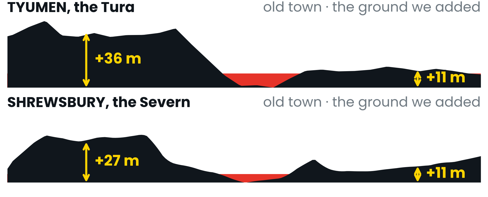

Out of
downhill
The Tura rises at 370 m in the Middle Urals and reaches the Kara Sea through the Tobol, the Irtysh and the Ob. It does four-fifths of its falling in the first 98 km. The swamps that hold half of Russia's marshland, a 3,650 km river with a single dam, an estuary a thousand kilometres long, a water conflict with China, and the flood that put my own city under in August 2026 all follow from what happens next: a gradient of about five centimetres per kilometre. I measured that gradient from satellite elevation data, then measured what it did to Tyumen.

What the gradient builds
Upper course — 370 m to 92 m
Steep gradient, high potential energy, so erosion is vertical: hydraulic action and abrasion cut down faster than the sides retreat, giving a narrow V-shaped valley and interlocking spurs. Load is coarse and angular.
Middle course — the plain
The gradient collapses and lateral erosion takes over. The Tura meanders, undercutting outer banks, building point bars on inner ones, widening a floodplain it then abandons in stages. Those abandoned floodplains are the river terraces Tyumen stands on — and the reason one bank of the city floods and the other does not.
Lower course — the Ob
Valley 30–50 km wide, floodplain 20–30 km, and below the Irtysh the spring flood spreads 40–50 km across it: the second largest floodplain on Earth. It ends in a delta of 4,000 km² and the Gulf of Ob — at 800–1,000 km the world's longest estuary, and only 10–12 m deep.
Why so much of it is swamp
With almost no slope the channels cannot evacuate meltwater or rain, so it sits on the interfluves. Half of all the marshland in Russia is in this basin. A seventh of the catchment drains internally and never reaches the Ob at all.
The Ob also flows north. The south thaws first, so meltwater arrives while the lower river is still sealed under 2 m of ice — it backs up and spreads sideways.
A river at work
People
27 million people, 39 cities over 100,000. The fields of the middle and lower Ob give about two-thirds of Russia's oil and gas. Navigable ~190 days a year upstream, 150 downstream, 100–110 in the Gulf; warming is adding 5.3 days a decade.
Energy — the gradient again
3,650 km of Ob carries one hydroelectric station: Novosibirsk, 490 MW, whose reservoir floods 1,070 km². Flat ground buys no head and drowns huge areas. The Irtysh, falling out of the Altai, carries three larger ones — Shulbinsk 702 MW, Bukhtarma 675 MW, Ust-Kamenogorsk ~330 MW.
Conflict: whose water is the Irtysh?
It is the longest transboundary tributary in the world — rising in China, crossing Kazakhstan, entering Russia. China's Irtysh–Karamay canal, begun 1994, already takes over 2.5 km³ a year and is built for 5–7. Downstream it is drinking water for four million Kazakhs.
There is still no allocation agreement. China has signed neither the UN Watercourses nor the UNECE Water Convention, and under its law Russia is not a party at all — the river never crosses their shared border.
Nature
The Vasyugan Mire — 53,000–55,000 km², the largest mire system in the northern hemisphere — sits on the Ob–Irtysh watershed and holds 400 km³ of fresh water. Only ~11% is protected. The Ob estuary feeds up to 3 million migrating birds. Sturgeon catch fell from 1,410 tonnes in the 1930s to 11 by 1997, 40% of the spawning grounds cut off by the dams above.
What I measured at Tyumen
Rain on the headwaters in the Middle Urals. Seven hundred kilometres downstream the Tura rose for three weeks through my home city, peaking at 897 cm on 2 August 2026 — a record summer flood. I filled sandbags for two days, then mapped it from Sentinel-2.



The 1586 fort took the bluff 36 m up; everything added since sits 11 m up. The same section through Shrewsbury puts the old town 27 m up and Frankwell — flooded three times in six weeks in 2000 — 11 m up. 6.3 million English properties are at risk now; 8 million by mid-century.
Method. Long profile: lowest Copernicus DEM GLO-30 elevation within 1.8 km of each waypoint, measured for this poster; distances are straight-line, so shorter than the channel. Flood extent: Sentinel-2 L2A, 18 June and 29 July 2026, MNDWI (Xu 2006) constrained by elevation and by connectivity to the channel; exposure from OpenStreetMap and WorldPop. GLO-30 is a surface model, so no flood depth is modelled for Shrewsbury, and the 29 July image precedes the peak — Tyumen's figures are a lower bound. Sources. Britannica; WWF/TNC Freshwater Ecoregions of the World; Eurasian Development Bank, The Irtysh River Basin (2025); UNESCO tentative list 5114; Ramsar SIS; CITES AC16 7.2; Yang, Ye & Shiklomanov, J. Hydromet.; Ivanov et al., Land (2022); Xu et al., Env. Res. Comms (2026); RusHydro; Samruk-Energy; Kommersant; The Moscow Times; Shropshire Council gauge board; Environment Agency NaFRA (2024). Images © European Union / ESA (Copernicus Sentinel-2 and DEM GLO-30), free and open licence. Every map, section and figure here is my own work from those data; the code, QGIS project and derived layers are public.